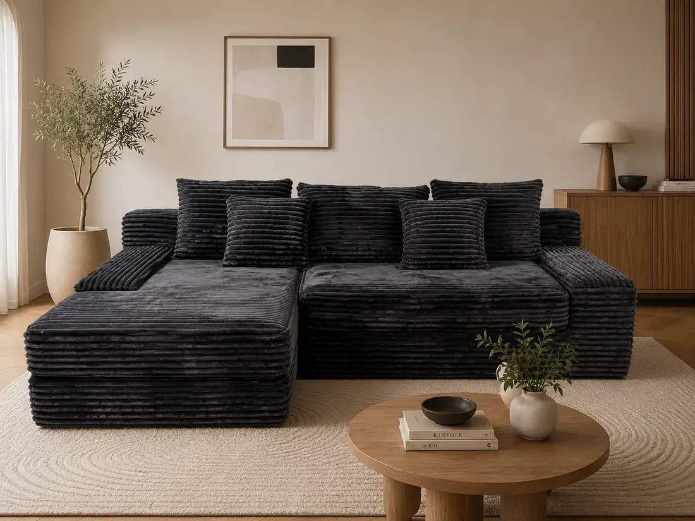
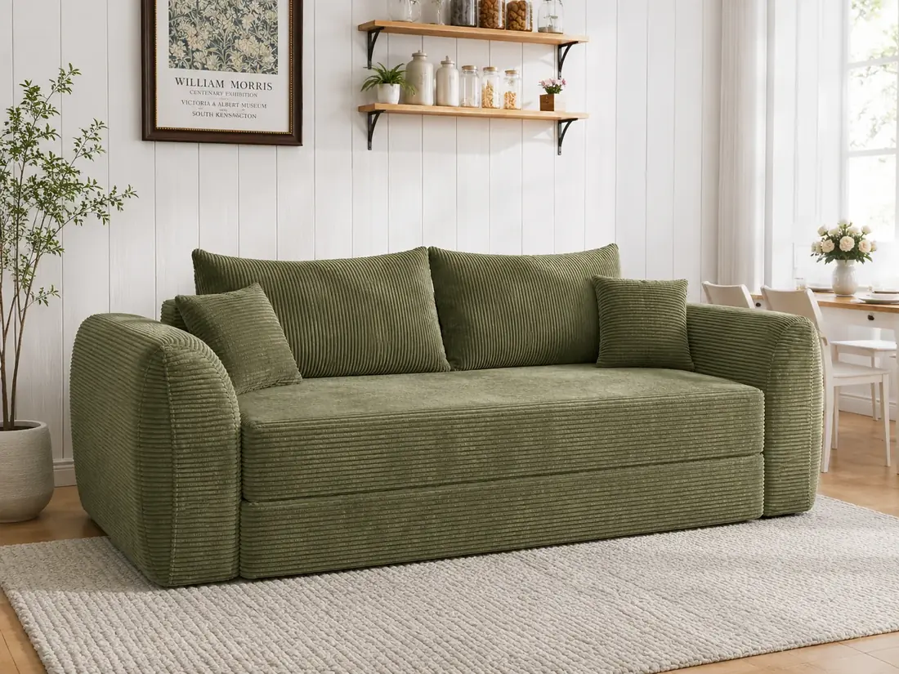

Sofa Bed
WhatsApp QuoteFN-101A
150 × 100 × 70 cm
Packing: 35 × 75 × 110 cmWeieryang helps furniture importers, wholesalers and online sellers source vacuum-compressed sofas with clear packing data, OEM options, fabric selection and container loading support.

Homepage is now focused on factory capability, packing logic, OEM process and buyer trust.
For compressed sofas, buyers care about product recovery, carton size, CBM, material choice and delivery efficiency. The homepage now answers these first.
Vacuum packing reduces carton volume and helps buyers compare shipping cost before bulk orders.
Fabric, color, size, carton label and market-specific requirements can be discussed before production.
Model, product size, packing size, CBM, weight and 40HQ loading reference are organized for sourcing teams.
Certificates and reports are moved to a dedicated page, so the homepage stays clear and conversion-focused.
The video is placed as a trust module, not as decoration. It gives buyers a quick view of real product presentation before they contact sales.
Instead of forcing buyers to browse everything, the page guides them from factory ability to product choice and quotation.
Compressed sofa, sofa bed, modular sofa, lounge chair or floor sofa.
Fabric, color, foam comfort, carton, logo label and target market.
Product size, carton size, CBM, weight and 40HQ loading reference.
Send model, quantity, destination country and packaging requirements by WhatsApp.
The homepage now explains why the product exists: easier storage, smaller cartons and better container planning for B2B furniture buyers.
Useful for warehouse handling and courier / distribution planning.
Helps importers compare freight cost and landing cost.
Helps buyers estimate container plan before negotiation.
Only six representative models are shown here. Full product catalog, product details and certificate files are moved into their own sections.
150 × 100 × 70 cm
Packing: 35 × 75 × 110 cm
双人190 × 105 × 67 cm
Packing: 42 × 42 × 120 cm
255 × 155 × 66 cm
Packing: 35 × 35 × 110 × 2 cm
200 × 90 × 70 3seat cm
Packing: 45 × 45 × 110 cm
280 × 102 × 66 cm
Packing: 35 × 35 × 110+40 × 40 × 115 cm
243 × 112 × 82 cm
Packing: 46 × 46 × 125 cmThe homepage should sell factory capability first. Buyers who need details can open the full product catalog.
Yes. Carton, label, fabric, color and packaging requirements can be confirmed before bulk production.
Model number, quantity, destination country, preferred fabric/color and packaging requirements.
Certificates and reports are moved to a dedicated certificate page for cleaner navigation and stronger trust.
Email: tangkelian@weieryang.com
WhatsApp / Mobile: +86 13317178019
Send product direction, quantity, destination country and target price. We will help match models and packing options.